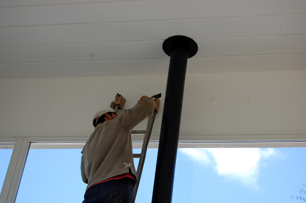
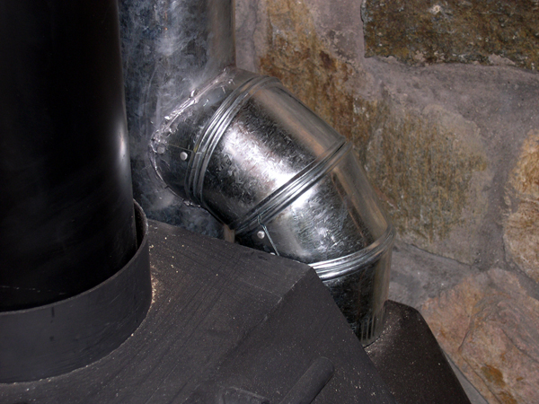
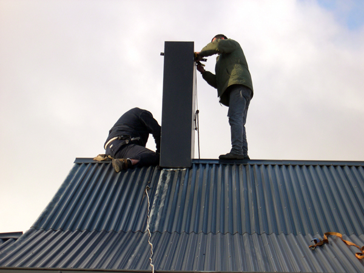
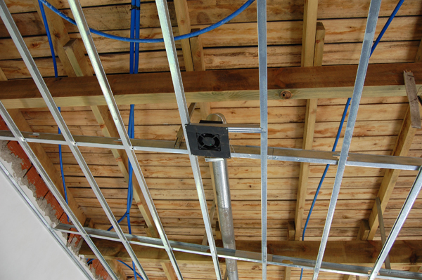
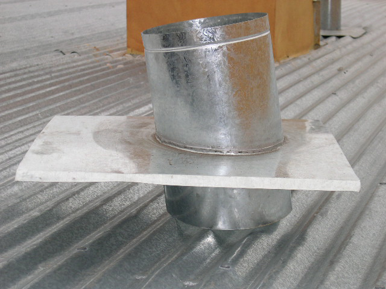
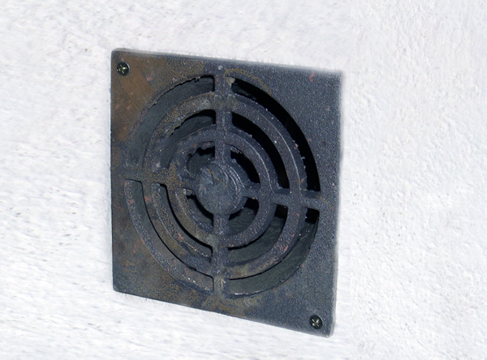

El calor que transforma una casa en un hogar.
Más de 35 años fabricando salamandras. Hoy también parrillas, provoleteras, discos y hornos.
Productos
Nuestras líneas
Calefacción
La más pedida
Salamandra · vidrio vitrocerámicoST-V 060
Para ambientes medianos y grandes. Carga lateral de leña y frente que se abre para limpiar el vidrio y las cenizas. Leñero y recuperador opcionales.
- Calefacciona
- 200m²
- Autonomía
- 7h
- kcal/h
- 16.000
- Peso
- 110 kg
- Ancho × prof.
- 600 × 450 mm
- Salida de humos
- 6″
Cómo elegir
Tres cosas antes de comprar.
Medí los metros
El modelo se elige por los m² que querés calefaccionar. Pasanos la medida del ambiente y te decimos cuál va.
Elegí dónde va
Lejos de escaleras y tragaluces, que se llevan el aire caliente arriba. Si querés llegar a otros ambientes, sumás un recuperador.
Usá leña seca
La leña húmeda calienta menos, cuesta prenderla y ensucia los caños. Bien estacionada rinde el doble.
Por qué Verellen
Calidad, durabilidad y diseño.
Todas tienen un pulmón que da una temperatura estable, sin olor ni humo, al prender y mientras funciona.
Con el recuperador, llevás el aire caliente a otras habitaciones: de 2 a 5 salidas según el modelo.
La cámara de combustión grande guarda mucha leña y la quema despacio. Cargás menos veces por noche.
Construcción robusta y hermética. Funciona bien por muchos años sin que tengas que hacerle nada.
Instalación y terminaciones
La colocamos y queda lista.
La instalación la hacen especialistas: buscamos el mejor lugar del ambiente, hacemos la salida de humos y la conectamos. En poco tiempo tenés calefacción y un mueble que queda lindo en la casa.






Nosotros
Una historia, un legado.
-
1953
La historia empieza antes de las salamandras. En 1953 el abuelo de la familia llegó a Tandil desde Bélgica, después de la guerra. Con el premio de un concurso de pintura que ganó su mujer, compró las primeras bolsas de cemento para fabricar ladrillos.
-
1986
El fundador
Felipe Verellen
Felipe empezó con una idea, sus manos y el boca en boca. En una zona sin gas, cansado del frío y del humo de las salamandras de fundición, diseñó la suya, con un pulmón que hacía el calor parejo y sin humo. Sin marketing, sin redes: los vecinos empezaron a pedirle una, y después los vecinos de los vecinos. Hay casas donde todavía le dicen "la Felipa".
Foto de Felipe -
Hoy
Segunda generación
Nicolás Verellen
Nico empezó de abajo: barriendo el galpón y aprendiendo a soldar al lado de su papá. Hace más de veinte años que está al frente de la fábrica. Modernizó el taller y el diseño, siempre buscando el mejor fuego y cero humo, y sostuvo lo que aprendió en casa: trabajo, palabra y puntualidad.
Foto de Nico en el taller
Esas salamandras siguen encendidas.
Esto no es solo calefacción. Es legado. Es familia. Es Verellen.
¿Prendemos el tuyo?
Escribinos con los metros del ambiente o el producto que te interesa y te respondemos con modelos y precios.
Escribinos por WhatsApp